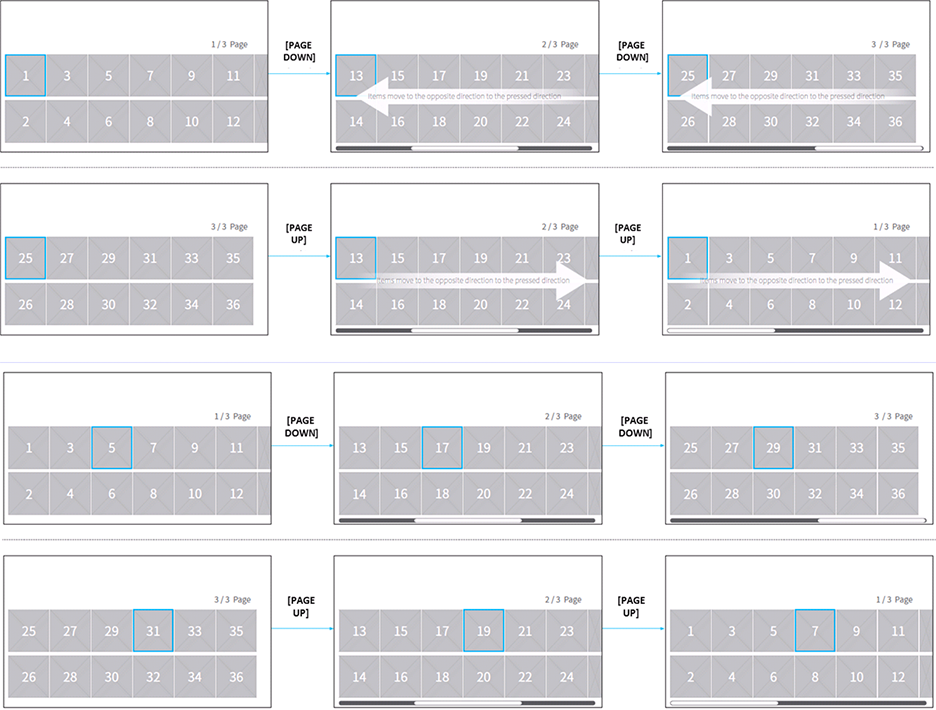

Page Interaction
- Overall
-
- • page key in this chapter refers to the key value used for page navigation
-
- - Page Up key activates the function of going to the previous page
- - Page Down key activates the function of going to the next page
- - for example, while browsing GUIDE, pressing Channel Key up/down activates page up/down
- • Order of Priority for PAGE navigation
-
- - 1st : Vertical list (1-Direction) – vertical scroll
- - 2nd : Horizontal list (1-Direction) – horizontal scroll,
- - 3rd : 2-Directional Grid-type – vertical scroll only, horizontal scroll not allowed.
- Navigation
-
- Basic Navigation - Same Item Size
-
- - When paging up/down using PAGE key, moves to previous/next page respectively.
- - Items move to the opposite direction to the pressed direction.
- 
- Basic Navigation - Vertical, horizontal type UI
-
- - The same principle is applied to the horizontal list.
- Basic Navigation - End of list
-
- - When using the PAGE key at the end of the list, pressing the PAGE key does not execute highligh movement, List movement.
- Basic Navigation - Different Item Size
-
- For items of different size, when pressing PAGE key, the highlight rule is as followed.
-
-
- - 1st: Among items except for those partially shown, the item which is located on the point of pressing the key is highlighted.
- - 2nd: in case of two items satisfy the condition, the item which is closer to the point is highlighted.
If, the distance to the point is equal, the left item is highlighted.
-
- Basic Navigation - Unit of page in scrolling list
-
- - The end of item which is not completely shown in the current page becomes the first item of the list in the following page.
- Basic Navigation – In case of insufficient items in the following list
-
- - If next page item does not complete a page, pressing PAGE DOWN key shows a complete page including the last item.
- - If previous page item does not complete a page, pressing PAGE UP key show a complete page including the first item.
- Basic Navigation – tab UI
-
- - PAGE UP/DOWN interaction can also be applied to category tab UIs
- Page Change Frequency ( Specifications of the Full HD - 1920*1080 )
-
Number of page change during PAGE key long press
= Floor (1.67 * T) , if 0 < T < 1.5
= Floor (2 * T) , if 1.5 <= Twhere, T is an PAGE key long press time.